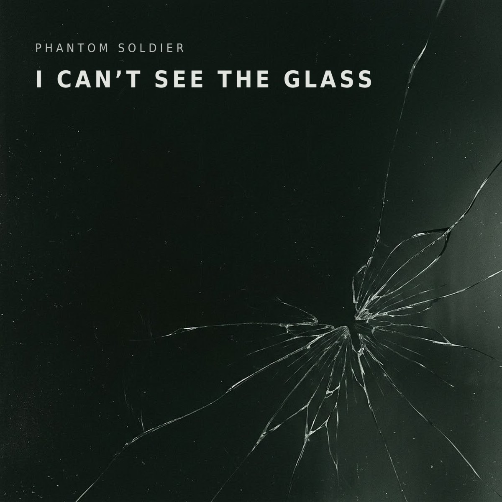
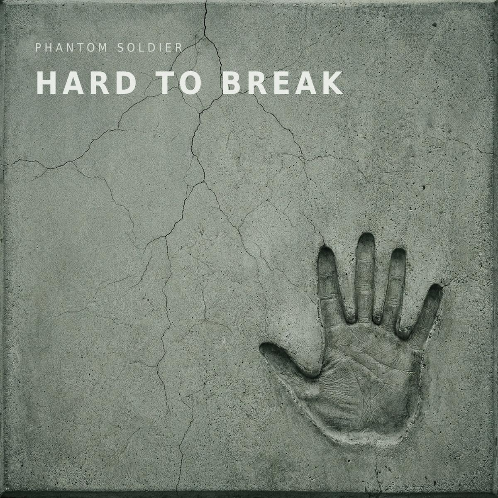

Where the songs come from
Every song here started as one true thing. A drawing. A fact about concrete. A question somebody asked at work. This is where each one came from, and what it turned into.
No names. That's the rule on every song, including the first ones. The stories are told the way they came in, with anything that would identify a person left out.
-
See the Glass

I Can't See the Glass New single
It started as a drawing: a path, glass walls you can't see until you hit them, and the X's at the bottom.
-
Hard to Break

Hard to Break
Concrete is crushed stone. Nothing standing anywhere wasn't broken first.
-
Still Here
Still Here
The first song. A quiet house, ringing ears, and the stance the whole project is built on.
-
Wrong Reasons
All the Wrong Reasons
What do you tell a kid who wants to enlist? The honest answer takes half an hour.

Have one of your own? That's what this whole thing is for. It costs nothing, you tell it your way, and your name never goes on it.
Veterans Crisis Line: dial 988, then press 1. Text 838255. Free, confidential, 24/7, for veterans, service members, and their families.